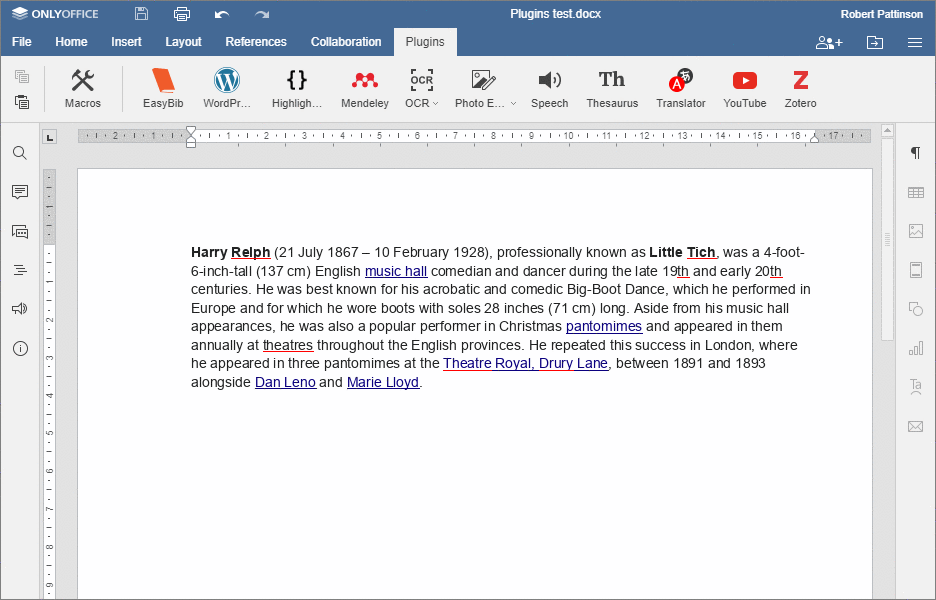

Referans ekleme
WORLDOFFICE Belge Düzenleyici, belgenize referan eklemek için Mendeley, Zotero ve EasyBib referans yöneticilerini destekler.
Mendeley
WORLDOFFICE'ı Mendeley'e bağlama
- Mendeley hesabınızda oturum açın.
- Belgenizde, Eklentiler sekmesine geçin veMendeley seçeneğini seçin, belgenizin sol tarafında bir kenar çubuğu açılacaktır.
-
Bağlantıyı Kopyala ve Formu Aç düğmesine tıklayın.
Tarayıcı, Mendeley sitesinde bir form açar. Bu formu doldurun ve WORLDOFFICE Uygulama Kimliğini not edin. - Belgenize geri dönün.
- Uygulama Kimliğini girin ve Kaydet seçeneğine tıklayın.
- Oturum Aç düğmesine tıklayın.
- İlerle düğmesine tıklayın.
Artık WORLDOFFICE'i Mendeley hesabınıza bağladınız.
Referansları ekleme
- Belgenizi açın ve imleci referansı/referansları eklemek istediğiniz yere getirin.
- Eklentiler sekmesine geçin veMendeley seçeneğini seçin.
- Bir arama metni girin ve klavyenizde Enter tuşuna basın.
- Bir veya daha fazla onay kutusuna tıklayın.
- [İsteğe bağlı] Yeni bir arama metni girin ve bir veya daha fazla onay kutusuna tıklayın.
- Stil açılır menüsünden referans stilini seçin.
- Kaynakça Ekle düğmesine tıklayın.
Zotero
WORLDOFFICE'ı Zotero'ya bağlama
- Zotero hesabınızda oturum açın.
- Belgenizde, Eklentiler sekmesine geçin veZotero seçeneğini seçin, belgenizin sol tarafında bir kenar çubuğu açılacaktır.
- Zotero API ayarları bağlantısına tıklayın.
- Zotero sitesinde, Zotero için yeni bir anahtar oluşturun, anahtarı kopyalayın ve daha sonra kullanmak üzere kaydedin.
- Belgenize geçin ve API anahtarını yapıştırın.
- Kaydet düğmesine tıklayın.
Artık WORLDOFFICE'i Zotero hesabınıza bağladınız.
Referansları ekleme
- Belgenizi açın ve imleci referansı/referansları eklemek istediğiniz yere getirin.
- Eklentiler sekmesine geçin veZotero seçeneğini seçin.
- Bir arama metni girin ve klavyenizde Enter tuşuna basın.
- Bir veya daha fazla onay kutusuna tıklayın.
- [İsteğe bağlı] Yeni bir arama metni girin ve bir veya daha fazla onay kutusuna tıklayın.
- Stil açılır menüsünden referans stilini seçin.
- Kaynakça Ekle düğmesine tıklayın.
EasyBib
- Belgenizi açın ve imleci referansı/referansları eklemek istediğiniz yere getirin.
- Eklentiler sekmesine geçin veEasyBib seçeneğini seçin.
- Bulmak istediğiniz kaynak türünü seçin.
- Bir arama metni girin ve klavyenizde Enter tuşuna basın.
- Uygun Kitap/Dergi makalesinin/Web Sitesinin sağ tarafındaki '+' düğmesine tıklayın. Kaynakçaya eklenecektir.
- Referans stilini seçin.
- Referansları eklemek için Belgeye Kaynakça Ekle düğmesine tıklayın.
